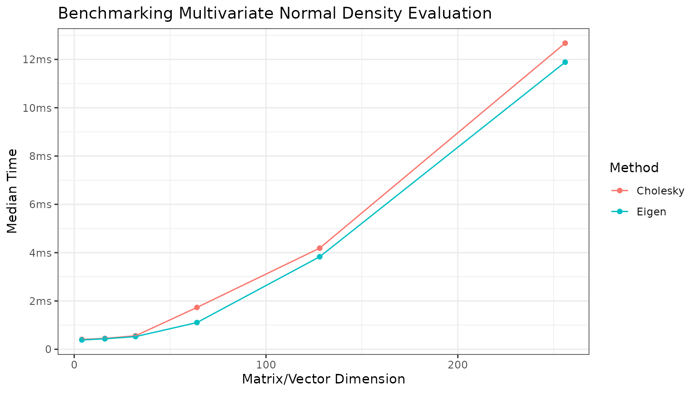
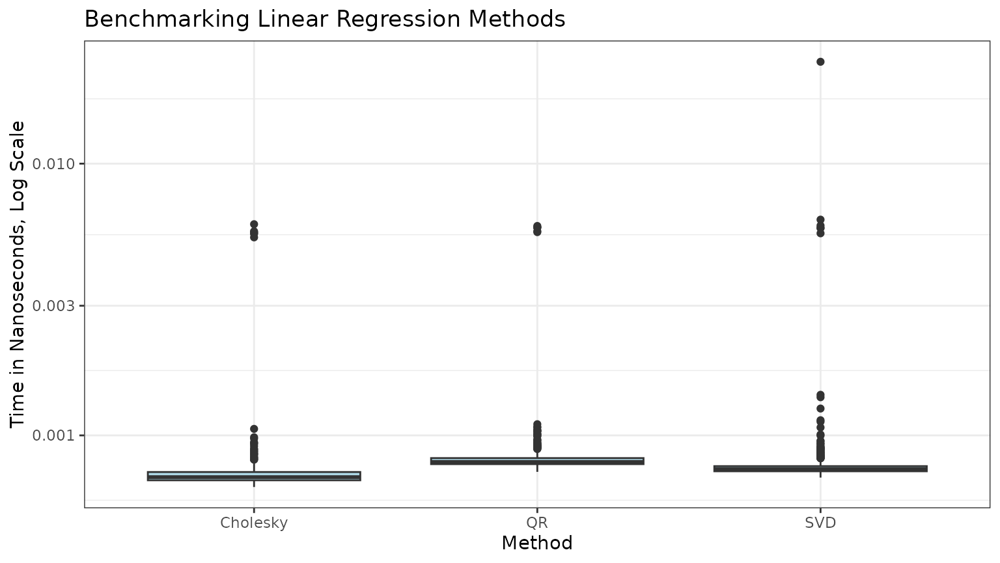

homework2.Rmd
library(STATS230)This package contains a function, rmvnorm, that
simulates from a multivariate normal distribution. Here, we will
informally validate it using sample mean/covariances computations.
# Simulate 100 realizations of a 4-dimensional multivariate normal distribution
set.seed(12345)
# Generate a mean vector
mu <- rpois(4, 1)
# Generate a covariance matrix
A <- matrix(rpois(16, 1), nrow = 4)
A[upper.tri(A)] <- 0
Sigma <- crossprod(A)
# Simulate from the multivariate normal distribution
mvn_sims <- rmvnorm(mean = mu,
cov = Sigma,
N = 100)
# Compute the sample mean and compare
sample_means <- rowMeans(mvn_sims)
compare_means <- data.frame("True" = mu,
"Sample" = sample_means,
"Relative Difference" = (mu - sample_means) / mu)
kableExtra::kable(compare_means)| True | Sample | Relative.Difference |
|---|---|---|
| 1 | 1.163559 | -0.1635593 |
| 2 | 2.756959 | -0.3784795 |
| 2 | 2.241915 | -0.1209577 |
| 2 | 2.424408 | -0.2122041 |
# Compute sample covariance
sample_covs <- cov(t(mvn_sims))
# Create tables
kableExtra::kable(Sigma, digits = 3, caption = "True Sigma") |>
kableExtra::kable_styling(full_width = FALSE)| 2 | 0 | 1 | 3 |
| 0 | 16 | 0 | 0 |
| 1 | 0 | 2 | 3 |
| 3 | 0 | 3 | 9 |
kableExtra::kable(sample_covs, digits = 3, caption = "Sample Covariance") |>
kableExtra::kable_styling(full_width = FALSE)| 1.991 | -0.623 | 1.030 | 3.035 |
| -0.623 | 15.840 | -0.290 | -1.000 |
| 1.030 | -0.290 | 2.060 | 3.167 |
| 3.035 | -1.000 | 3.167 | 9.619 |
This package contains a function, dmvnorm, that
evaluates the density of a multivariate normal distribution. In this
vignette, we will run the function a few times at different dimensions
to see how the runtime scales.
# Use bench package for microbenchmarking
# bench::press to press results over many dimensions
set.seed(12345)
benchmarks <- bench::press(
dims = c(4, 16, 32, 64, 128, 256),
{
x <- rep(0, dims)
mu <- rep(0, dims)
A <- matrix(rnorm(dims^2), nrow = dims)
A[upper.tri(A)] <- 0
Sigma <- crossprod(A) + diag(dims) * 0.01
bench::mark(
"Cholesky" = dmvnorm(x, mu, Sigma),
"Eigen" = dmvnorm(x, mu, Sigma, method = "eigen")
)
}
)
#> Running with:
#> dims
#> 1 4
#> 2 16
#> 3 32
#> 4 64
#> 5 128
#> 6 256
# Plot the results with ggplot
library(ggplot2)
benchmarks <- benchmarks[, c("dims", "median", "expression")]
colnames(benchmarks) <- c("Dimensions", "CPUTime", "Method")
benchmarks$Method <- as.character(benchmarks$Method)
ggplot(data = benchmarks, aes(x = Dimensions, y = CPUTime, color = Method)) +
geom_point() +
geom_line() +
labs(title = "Benchmarking Multivariate Normal Density Evaluation",
x = "Matrix/Vector Dimension",
y = "Median Time") +
bench::scale_y_bench_time(base = NULL) +
theme_bw()
my_lm() using Cholesky, QR, and SVD
with lm()
# load data
data <- read.csv(system.file("homework2_regression.csv",
package = "STATS230"))
# run each regression
# use 0 + in formula because we already have a column for intercept
chol_lm <- my_lm(y ~ 0 + ., data = data, method = "chol", se = TRUE)
qr_lm <- my_lm(y ~ 0 + ., data = data, method = "qr", se = TRUE)
svd_lm <- my_lm(y ~ 0 + ., data = data, method = "svd", se = TRUE)
stats_lm <- stats::lm(y ~ 0 + ., data = data) # note that lm does qr by default
# compare the coefficients in a table
kableExtra::kable(
data.frame(
chol = chol_lm$coefficients,
qr = qr_lm$coefficients,
svd = svd_lm$coefficients,
stats = stats_lm$coefficients
),
caption = "Comparison of coefficients from different methods"
)| chol | qr | svd | stats | |
|---|---|---|---|---|
| x1 | -0.0500634 | -0.0500634 | -0.0500634 | -0.0500634 |
| x2 | -2.0587331 | -2.0587331 | -2.0587331 | -2.0587331 |
| x3 | -0.8897836 | -0.8897836 | -0.8897836 | -0.8897836 |
| x4 | 0.8698562 | 0.8698562 | 0.8698562 | 0.8698562 |
| x5 | 3.1046126 | 3.1046126 | 3.1046126 | 3.1046126 |
# compare the standard errors in a table
kableExtra::kable(
data.frame(
chol = chol_lm$standard_errors,
qr = qr_lm$standard_errors,
svd = svd_lm$standard_errors,
stats = summary(stats_lm)$coefficients[, "Std. Error"]
),
caption = "Comparison of standard errors from different methods"
)| chol | qr | svd | stats | |
|---|---|---|---|---|
| x1 | 0.0622607 | 0.0622607 | 0.0622607 | 0.0622607 |
| x2 | 0.0893586 | 0.0893586 | 0.0893586 | 0.0893586 |
| x3 | 0.0896073 | 0.0896073 | 0.0896073 | 0.0896073 |
| x4 | 0.1048649 | 0.1048649 | 0.1048649 | 0.1048649 |
| x5 | 0.0896658 | 0.0896658 | 0.0896658 | 0.0896658 |
my_lm() using Cholesky,
QR, and SVD
benchmarks <- bench::mark(
"Cholesky" = my_lm(y ~ 0 + ., data, "chol"),
"QR" = my_lm(y ~ 0 + ., data, "qr"),
"SVD" = my_lm(y ~ 0 + ., data, "svd"),
iterations = 1000
)
benchmark_times <- do.call(c, benchmarks$time)
benchmarks_df <- data.frame(
method = rep(names(benchmarks$expression), each = 1000),
time = benchmark_times
)
ggplot(benchmarks_df, aes(x = method, y = time)) +
geom_boxplot(fill = "lightblue") +
labs(title = "Benchmarking Linear Regression Methods",
x = "Method",
y = "Time in Nanoseconds, Log Scale") +
theme_bw() +
scale_y_log10()
Recall the computational complexities of Cholesky, QR, and SVD are , , and respectively.
Here, we have a dataset with and .
X <- as.matrix(data[, -1])
XTX <- crossprod(X)
lambda <- eigen(XTX)$values
max(lambda) / min(lambda)
#> [1] 3.018046OLS coefficients are computed by . In this case the interpretation of the condition number is that the relative error in the s should not exceed approximately 3 times a small relative perturbation in .